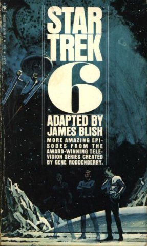

Posts Tagged With 'Star Trek'
Though we're up to August 1974 in my chronological investigation of Star Trek, we must once again step back in time to look at an interesting bit of history: Spockanalia, the first Star Trek fanzine, edited by Devra Michele Langsam and Sherna Comerford.
A few words on fanzines, for ...
Continue reading »
The next in Alan Dean Foster's series of novelizations of Star Trek: The Animated Series, published in August 1974, two months following its predecessor, is Star Trek Log Two, which adapts "The Survivor", "The Lorelei Signal", and "The Infinite Vulcan".

None of the stories in this volume are particularly ...
Continue reading »
Though I'm generally reading these books in publication order, for the next book in our Trek journey, we need to step back in time about a year. Today's book is the second non-fiction Trek book we're looking at, David Gerrold's The World of Star Trek, published ...
Continue reading »
After (finally!) finishing the tenth in James Blish's series of adaptations, we come to June 1974, and the publication of Alan Dean Foster's Star Trek Log One. This volume adapts the first three episodes of Star Trek: The Animated Series, "Beyond the Farthest Star", "Yesteryear", and "One of ...
Continue reading »
February 1974 brings another entry in Blish's series of Star Trek novelizations, Star Trek 10. This volume adapts "The Alternative Factor", "The Empath", "The Galileo Seven", "Is There in Truth No Beauty?", "A Private Little War", and "The Omega Glory".
In his introduction to this volume, Blish confirms what ...
Continue reading »
If 1972 had a torrent of James Blish's adaptations (four!), 1973 had a drought. In August 1973 was published that year's sole entry in the series, Star Trek 9. This volume adapts "Return to Tomorrow", "The Ultimate Computer", "That Which Survives", "Obsession", "The Return of the Archons", and ...
Continue reading »
Let's take a quick look at the first six years of Trek lit, shall we? Eleven books were published between 1967 and 1972, comprising two original novels, one nonfiction 'making of' book, and eight volumes of adaptations of episodes from the television show. Namely:
- Star Trek by James Blish ...
Continue reading »
A few more months brings us to the final Trek book of the year: James Blish's Star Trek 8, published in November 1972. This volume adapts "Spock's Brain", "The Enemy Within", "Catspaw", "Where No Man Has Gone Before", "Wolf in the Fold", and "For the World Is Hollow ...
Continue reading »
Keeping up the pace, in July 1972 James Blish released his seventh volume of novelizations, Star Trek 7. In this volume are adapted "Who Mourns for Adonais?", "The Changeling", "The Paradise Syndrome", "Metamorphosis", "The Deadly Years", and "Elaan of Troyius".

"Who Mourns for Adonais?" reminds me once again how shockingly ...
Continue reading »
Close on the heels of his previous book, James Blish published another entry in his series of Trek novelizations, Star Trek 6. This one includes adaptations of "The Savage Curtain", "The Lights of Zetar", "The Apple", "By Any Other Name", "The Cloud Minders", and "The Mark of Gideon".

Blish's ...
Continue reading »